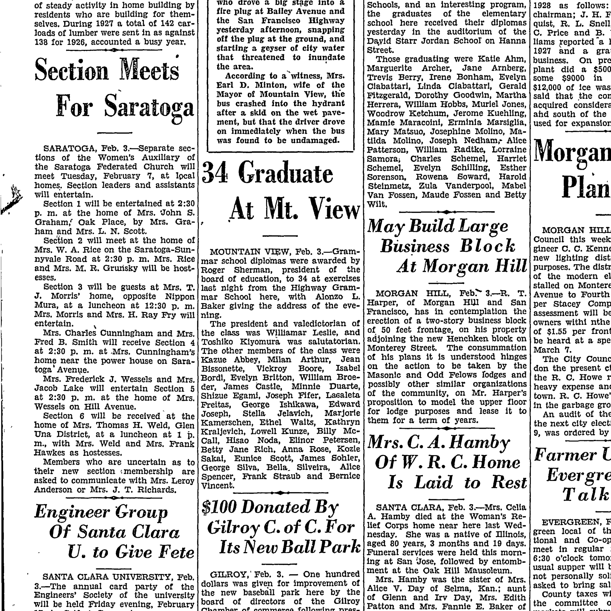
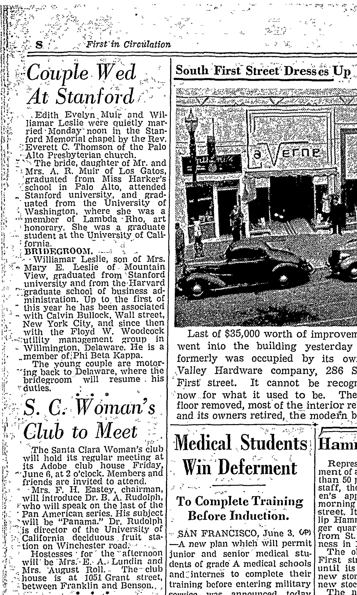
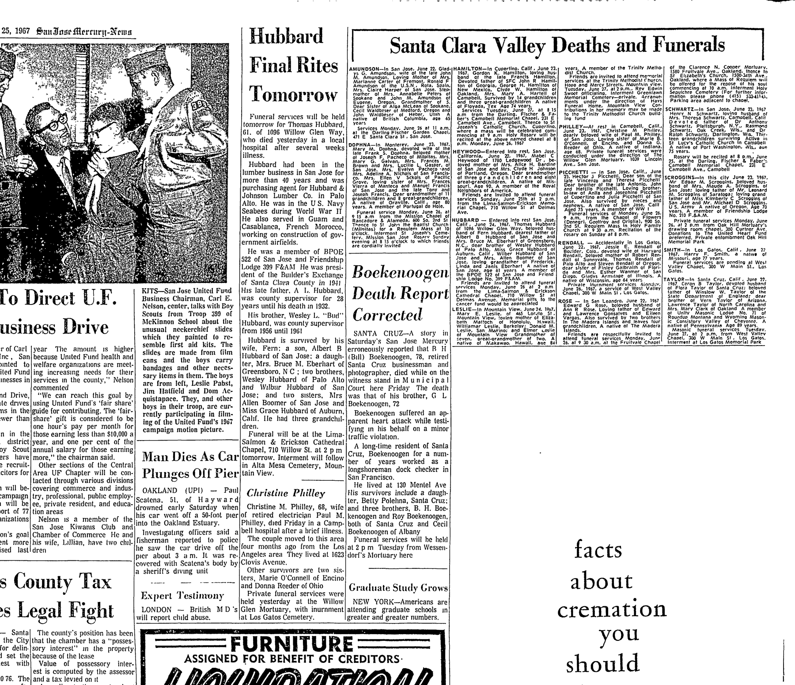

Williamar Leslie 1913–1992
Great-grandfather of Genevieve Elisa Symanski Nelson, wife of Peter.
Williamar Leslie was born on 17 Jun 1913 (according to the family's 2015 tree)1, the son of Robert Leslie and Mary Elizabeth Paty4,5,6,7. He married Edith Evelyn Muir on 2 Jun 1941 in California, United States8,9. He died on 21 Mar 19923.
Family
- Parents
- Robert Leslie and Mary Elizabeth Paty d. 1967 documented
- Wife
- Edith Evelyn Muir 1916–2018 · married on 2 Jun 1941 in California, United States
- Children
- Lael Leslie documented
- Lorin Dale Leslie b. 1948 documented
- Lann Daniel Leslie b. 1955 documented
Life events
| Event | Date | Place and details |
|---|---|---|
| Born | 17 Jun 1913 | According to the family's 2015 tree1 |
| Education | 2 Feb 1928 | Mountain View, California, United States Graduated as class president and valedictorian of the 34-member class of Highway Grammar School in Mountain View, Santa Clara County, California.2 |
| Died | 21 Mar 1992 | 3 |
Records





Sources
- Peter's tree, danenberg.sql, 2007–2015, personae 102, birth.
- Grammar School Diplomas Awarded at Mountain View, Evening News (San Jose, California), 3 February 1928, p. 17.
MOUNTAIN VIEW, Feb. 3.—Grammar school diplomas were awarded by Roger Sherman, president of the board of education, to 34 at exercises last night from the Highway Grammar School here, with Alonzo L. Baker giving the address of the evening. The president and valedictorian of the class was Williamar Leslie, and Toshlko Kiyomura was salutatorian.
Translation: MOUNTAIN VIEW, Feb. 3.—Grammar school diplomas were awarded by Roger Sherman, president of the board of education, to 34 at exercises last night from the Highway Grammar School here, with Alonzo L. Baker giving the address of the evening. The president and valedictorian of the class was Williamar Leslie, and Toshiko Kiyomura was salutatorian.
Graduated as class president and valedictorian of the 34-member class of Highway Grammar School in Mountain View, Santa Clara County, California.
- Williamar Leslie: Social Security Death Index (SSDI) Death Record.
Name: Williamar Leslie State of Issue: New York Date of Birth: Tuesday June 17, 1913 Date of Death: Saturday March 21, 1992 Est. Age at Death: 78 years, 9 months, 4 days
Social Security Death Index record: Williamar Leslie, born Tuesday, 17 June 1913, died Saturday, 21 March 1992 (age 78 years, 9 months, 4 days); SSN issued in New York (where he worked on Wall Street after Harvard Business School).
- Peter's tree, danenberg.sql, 2007–2015, parentages 29.
- Couple Wed At Stanford, San Jose Mercury Herald (San Jose, California), 4 June 1941, p. 8.
BRIDEGROOM. --v - -Williamar Leslie, son of Mrs. » Mary E. Leslie of Mountain View, graduated from ' Stanford university
mother: Mary Elizabeth Paty
- Death Notice: Leslie — Mary E., San Jose Mercury News (San Jose, California), 25 June 1967, p. 33.
LESLIE—In Mountain View, June24, 19&7, Mary E. Leslie, of 465 Loreto St. Mountain View, loving mother of Elizabeth Mattoch of Honolulu, Hawaii. WIMIamar Leslie, Berkeley; Donald M. Leslie, San Marino; and Elmer ceslie of Mountain View
mother: Mary Elizabeth Paty
- Household of Robert W Leslie and Mary E Leslie, Berkeley, Alameda, California, 1920 US Census.
Name: Robert W Leslie | Age: 53 | Birth Year: abt 1867 [abt 1867] | Birthplace: Ireland | Home in 1920: Berkeley, Alameda, California | Street: Prince Street | House Number: 2737 | Residence Date: 1920 | Race: White | Gender: Male | Immigration Year: 1885 | Relation to Head of House: Head | Marital Status: Married | Spouse's Name: Mary E Leslie | Father's Birthplace: Ireland | Mother's Birthplace: Ireland | Native Tongue: English | Able to Speak English: Yes | Occupation: Merchant | Industry: Retail Coal Store | Employment Field: Employer | Home Owned or Rented: Owned | Home Free or Mortgaged: Free | Naturalization Status: Naturalized | Able to read: Yes | Able to Write: Yes | Neighbors: View others on page || Household: Robert W Leslie 53 Head; Mary E Leslie 35 Wife; Elizabeth Leslie 7 Daughter; William R Leslie 6 Son; Donald Leslie 5 Son; Elmer Leslie 2 Son
father: Robert Leslie; mother: Mary Elizabeth Paty
- Couple Wed At Stanford, San Jose Mercury Herald (San Jose, California), 4 June 1941, p. 8.
Edith Evelyn,Muir and Wil- iiamar Leslie were quietly married-Monday'noon in the Stanford Memorial chapel by the Rev. : Everett C. Thomson of the Palo ■ Alto Presbyterian church. “The bride, daughter of Mr. and - i Mrs. A. R. Muir of Los Gatos, 'graduated from Miss I-Iarker’s ^school in Palo Alto, attended „ Stanford university, and grad- ' uated from the University of • Washington, where she was a member of Lambda Rho, art ! honorary. She was a graduate •> student at the University of Cali- : fornia.
Translation: Edith Evelyn Muir and Williamar Leslie were quietly married Monday noon in the Stanford Memorial chapel by the Rev. Everett C. Thomson of the Palo Alto Presbyterian church. The bride, daughter of Mr. and Mrs. A. R. Muir of Los Gatos, graduated from Miss Harker's school in Palo Alto, attended Stanford university, and graduated from the University of Washington, where she was a member of Lambda Rho, art honorary. She was a graduate student at the University of California.
Married Williamar Leslie at noon on Monday, 2 June 1941 in the Stanford Memorial Chapel, officiated by the Rev. Everett C. Thomson of the Palo Alto Presbyterian Church (marriage license issued in San Jose, 30 May 1941, listing Williamar Leslie, 27, of Wilmington, Delaware, and Edith Evelyn Muir, 24, of Los Gatos); daughter of Mr. and Mrs. A. R. Muir of Los Gatos; graduated from Miss Harker's School in Palo Alto, attended Stanford University, graduated from the University of Washington (where she was a member of Lambda Rho art honorary), and was a graduate student at the University of California.
- Couple Wed At Stanford, San Jose Mercury Herald (San Jose, California), 4 June 1941, p. 8.
BRIDEGROOM. --v - -Williamar Leslie, son of Mrs. » Mary E. Leslie of Mountain View, graduated from ' Stanford university and from theTIarvard '.'■/graduate" school of business administration. Up to the first of " this year he has been associated - with Calvin Bullock, Wall street, New York City, and since then with the Floyd W. Woodcock '“utility management group in - Willmington, Delaware. He is a ..member ofiPhi Beta Kappa. The young couple are motor- "ing back to Delaware, where the bridegroom will resume . his v duties.
Translation: BRIDEGROOM — Williamar Leslie, son of Mrs. Mary E. Leslie of Mountain View, graduated from Stanford university and from the Harvard graduate school of business administration. Up to the first of this year he has been associated with Calvin Bullock, Wall street, New York City, and since then with the Floyd W. Woodcock utility management group in Wilmington, Delaware. He is a member of Phi Beta Kappa. The young couple are motoring back to Delaware, where the bridegroom will resume his duties.
Son of Mrs. Mary E. Leslie of Mountain View, California; graduated from Stanford University (where he was awarded a Converse scholarship in May 1934 and elected to Phi Beta Kappa) and from the Harvard Graduate School of Business Administration; worked with Calvin Bullock on Wall Street in New York City until 1 January 1941, and thereafter with the Floyd W. Woodcock utility management group in Wilmington, Delaware; married Edith Evelyn Muir on Monday, 2 June 1941 in the Stanford Memorial Chapel.